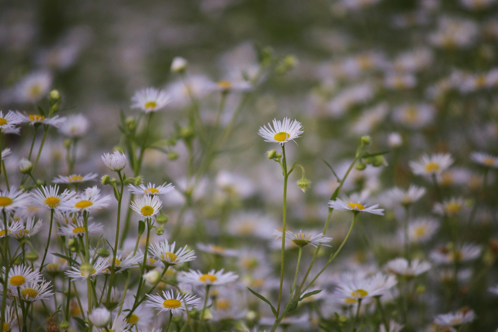

Care Tips
Learn How to Care for Your Plants
Popular Requests:
Succulents
Water only when soil is dry.
Place in bright indirect light.
Rotate for even growth.
During winter, reduce watering frequency significantly.
Repot every 1–2 years with cactus/succulent soil mix.
Watch for signs of overwatering like mushy leaves or yellowing.
See more
Herbs
Keep soil slightly moist.
Place near a sunny window.
Use organic fertilizer sparingly.
Ensure good air circulation to avoid mildew.
Rotate pots weekly so all sides get sunlight.
See more
Flowering Plants

Water at soil level, not leaves.
Give 6+ hours of sunlight daily.
Protect from sudden drafts.
Ensure pots or beds have proper drainage.
Support taller stems with stakes if needed.
See more
View all